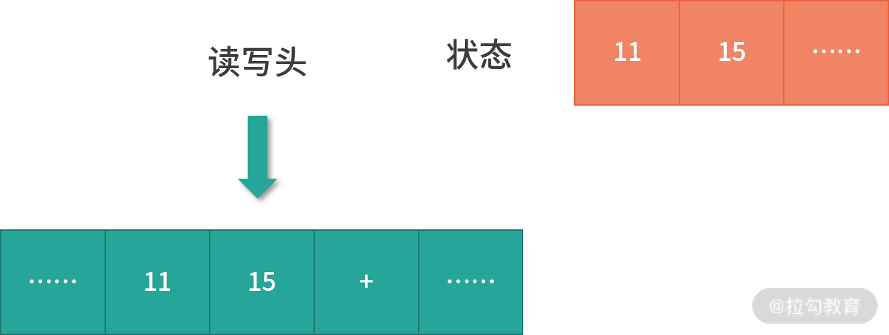

- 00 开篇词 为什么大厂面试必考操作系统？.md
- 00 课前必读 构建知识体系，可以这样做！.md
- 01 计算机是什么：“如何把程序写好”这个问题是可计算的吗？.md
- 02 程序的执行：相比 32 位，64 位的优势是什么？（上）.md
- 03 程序的执行：相比 32 位，64 位的优势是什么？（下）.md
- 04 构造复杂的程序：将一个递归函数转成非递归函数的通用方法.md
- 05 存储器分级：L1 Cache 比内存和 SSD 快多少倍？.md
- 05 (1) 加餐 练习题详解（一）.md
- 06 目录结构和文件管理指令：rm -rf 指令的作用是？.md
- 07 进程、重定向和管道指令：xargs 指令的作用是？.md
- 08 用户和权限管理指令： 请简述 Linux 权限划分的原则？.md
- 09 Linux 中的网络指令：如何查看一个域名有哪些 NS 记录？.md
- 10 软件的安装： 编译安装和包管理器安装有什么优势和劣势？.md
- 11 高级技巧之日志分析：利用 Linux 指令分析 Web 日志.md
- 12 高级技巧之集群部署：利用 Linux 指令同时在多台机器部署程序.md
- 12 (1)加餐 练习题详解（二）.md
- 13 操作系统内核：Linux 内核和 Windows 内核有什么区别？.md
- 14 用户态和内核态：用户态线程和内核态线程有什么区别？.md
- 15 中断和中断向量：Javajs 等语言为什么可以捕获到键盘输入？.md
- 16 WinMacUnixLinux 的区别和联系：为什么 Debian 漏洞排名第一还这么多人用？.md
- 16 (1)加餐 练习题详解（三）.md
- 17 进程和线程：进程的开销比线程大在了哪里？.md
- 18 锁、信号量和分布式锁：如何控制同一时间只有 2 个线程运行？.md
- 19 乐观锁、区块链：除了上锁还有哪些并发控制方法？.md
- 20 线程的调度：线程调度都有哪些方法？.md
- 21 哲学家就餐问题：什么情况下会触发饥饿和死锁？.md
- 22 进程间通信： 进程间通信都有哪些方法？.md
- 23 分析服务的特性：我的服务应该开多少个进程、多少个线程？.md
- 23 (1)加餐 练习题详解（四）.md
- 24 虚拟内存 ：一个程序最多能使用多少内存？.md
- 25 内存管理单元： 什么情况下使用大内存分页？.md
- 26 缓存置换算法： LRU 用什么数据结构实现更合理？.md
- 27 内存回收上篇：如何解决内存的循环引用问题？.md
- 28 内存回收下篇：三色标记-清除算法是怎么回事？.md
- 28 (1)加餐 练习题详解（五）.md
- 29 Linux 下的各个目录有什么作用？.md
- 30 文件系统的底层实现：FAT、NTFS 和 Ext3 有什么区别？.md
- 31 数据库文件系统实例：MySQL 中 B 树和 B+ 树有什么区别？.md
- 32 HDFS 介绍：分布式文件系统是怎么回事？.md
- 32 (1)加餐 练习题详解（六）.md
- 33 互联网协议群（TCPIP）：多路复用是怎么回事？.md
- 34 UDP 协议：UDP 和 TCP 相比快在哪里？.md
- 35 Linux 的 IO 模式：selectpollepoll 有什么区别？.md
- 36 公私钥体系和网络安全：什么是中间人攻击？.md
- 36 (1)加餐 练习题详解（七）.md
- 37 虚拟化技术介绍：VMware 和 Docker 的区别？.md
- 38 容器编排技术：如何利用 K8s 和 Docker Swarm 管理微服务？.md
- 39 Linux 架构优秀在哪里.md
- 40 商业操作系统：电商操作系统是不是一个噱头？.md
- 40 (1)加餐 练习题详解（八）.md
- 41 结束语 论程序员的发展——信仰、选择和博弈.md
02 程序的执行：相比 32 位，64 位的优势是什么？（上）
本节课给你讲学习操作系统之前的一个前置知识：程序是如何执行的？
我们先来看一道常规的面试题：相比 32 位，64 位的优势是什么？
面试官考察这种类型的问题，主要是想看求职者是否有扎实的计算机基础，同时想知道求职者在工作中是否充满好奇，会主动学习、寻根问底，毕竟 32、64 位是经常出现在程序员视野的词汇，常见的东西都弄明白了，那说明这个人学习能力强。
其实 ，面试官在这里给你挖了一个陷阱，因为他没有说清楚 32、64 位指的是操作系统、是软件、还是 CPU？
- 如果是软件，那么我们的数据库有 32 位和 64 位版本；
- 如果是操作系统，那么在阿里云上选择 Centos 和 Debian 版本的时候，也会有 32/64 版本；
- 如果是 CPU，那么有 32 位 CPU，也有 64 位 CPU。
接下来请你带着问题开始今天的课程学习，本课时的重点是带你学懂程序执行的原理。
图灵机的构造
想要学懂程序执行的原理，就要从图灵机说起了。它在计算机科学方面有两个巨大的贡献：
第一，它清楚地定义了计算机能力的边界，也就是可计算理论；
第二，它定义了计算机由哪些部分组成，程序又是如何执行的。

我们先来看一看图灵机的内部构造：
- 图灵机拥有一条无限长的纸带，纸带上是一个格子挨着一个格子，格子中可以写字符，你可以把纸带看作内存，而这些字符可以看作是内存中的数据或者程序。
- 图灵机有一个读写头，读写头可以读取任意格子上的字符，也可以改写任意格子的字符。
- 读写头上面的盒子里是一些精密的零件，包括图灵机的存储、控制单元和运算单元。
图灵机如何执行程序
下面我们来举一个例子，让大家弄清楚图灵机是如何工作的，比如我们要计算 11 + 15 的值，具体的运算步骤如下：
- 首先，我们将“11、15、+” 分别写入纸带上的 3 个格子（现在纸带上的字符串是11、15、 +)，然后将读写头先停在 11 对应的格子上。

- 接下来，图灵机通过读写头读入 11 到它的存储设备中（这个存储设备也叫作图灵机的状态）。图灵机没有说读写头为什么可以识别纸带上的字符，而是假定读写头可以做到这点。

- 然后读写头向右移动一个格，用同样的方法将 15 读入图灵机的状态中。现在图灵机的状态中有两个连续的数字，11 和 15。

- 接下来重复上面的过程，会读到一个+号。下面我详细说一下这个运算流程：
- 读写头读到一个 + 号 ；
- 然后将 + 号传输给控制单元 ；
- 控制单元发现是一个 + 号，所以没有存入状态中。因为 + 号是一个我们预设的控制符（指令），它的作用是加和目前状态。因此，控制单元识别出是控制符，并通知运算单元工作；
- 运算单元从状态中读入 11、15 并进行计算，将结果 26 存储到状态；
- 运算单元将结果回传给控制单元；
- 控制单元将结果传输给读写头。

- 读写头向右移动，将结果 26 写入纸带。

这样，我们就通过图灵机计算出了 11+15 的值。不知道你有没有发现，图灵机构造的这一台机器，主要功能就是读写纸带然后计算；纸带中有数据、也有控制字符（也就是指令），这个设计和我们今天的计算机是一样的。
图灵通过数学证明了，一个问题如果可以拆解成图灵机的可执行步骤，那问题就是可计算的。另一方面，图灵机定义了计算机的组成以及工作原理，但是没有给出具体的实现。
冯诺依曼模型

具体的实现是 1945 年冯诺依曼和其他几位科学家在著名的 101 页报告中提出的。报告遵循了图灵机的设计，并提出用电子元件构造计算机，约定了用二进制进行计算和存储，并且将计算机结构分成以下 5 个部分：
- 输入设备；
- 输出设备；
- 内存；
- 中央处理器；
- 总线。
这个模型也被称为冯诺依曼模型，下面我们具体来看看这 5 部分的作用。
内存
在冯诺依曼模型中，程序和数据被存储在一个被称作内存的线性排列存储区域。存储的数据单位是一个二进制位，英文是 bit。最小的存储单位叫作字节，也就是 8 位，英文是 byte，每一个字节都对应一个内存地址。内存地址由 0 开始编号，比如第 1 个地址是 0，第 2 个地址是 1， 然后自增排列，最后一个地址是内存中的字节数减 1。
我们通常说的内存都是随机存取器，也就是读取任何一个地址数据的速度是一样的，写入任何一个地址数据的速度也是一样的。
CPU
冯诺依曼模型中 CPU 负责控制和计算。为了方便计算较大的数值，CPU 每次可以计算多个字节的数据。
- 如果 CPU 每次可以计算 4 个 byte，那么我们称作 32 位 CPU；
- 如果 CPU 每次可以计算 8 个 byte，那么我们称作 64 位 CPU。
这里的 32 和 64，称作 CPU 的位宽。
为什么 CPU 要这样设计呢？ 因为一个 byte 最大的表示范围就是 0~255。比如要计算 20000*50，就超出了byte 最大的表示范围了。因此，CPU 需要支持多个 byte 一起计算。当然，CPU 位数越大，可以计算的数值就越大。但是在现实生活中不一定需要计算这么大的数值。比如说 32 位 CPU 能计算的最大整数是 4294967295，这已经非常大了。
控制单元和逻辑运算单元
CPU 中有一个控制单元专门负责控制 CPU 工作；还有逻辑运算单元专门负责计算。具体的工作原理我们在指令部分给大家分析。
寄存器
CPU 要进行计算，比如最简单的加和两个数字时，因为 CPU 离内存太远，所以需要一种离自己近的存储来存储将要被计算的数字。这种存储就是寄存器。寄存器就在 CPU 里，控制单元和逻辑运算单元非常近，因此速度很快。
- 寄存器中有一部分是可供用户编程用的，比如用来存加和指令的两个参数，是通用寄存器。
- 还有一部分寄存器有特殊的用途，叫作特殊寄存器。比如程序指针，就是一个特殊寄存器。它存储了 CPU 要执行的下一条指令所在的内存地址。注意，程序指针不是存储了下一条要执行的指令，此时指令还在内存中，程序指针只是存储了下一条指令的地址。
- 下一条要执行的指令，会从内存读入到另一个特殊的寄存器中，这个寄存器叫作指令寄存器。指令被执行完成之前，指令都存储在这里。
总线
CPU 和内存以及其他设备之间，也需要通信，因此我们用一种特殊的设备进行控制，就是总线。总线分成 3 种：
- 一种是地址总线，专门用来指定 CPU 将要操作的内存地址。
- 还有一种是数据总线，用来读写内存中的数据。
当 CPU 需要读写内存的时候，先要通过地址总线来指定内存地址，再通过数据总线来传输数据。
- 最后一种总线叫作控制总线，用来发送和接收关键信号，比如后面我们会学到的中断信号，还有设备复位、就绪等信号，都是通过控制总线传输。同样的，CPU 需要对这些信号进行响应，这也需要控制总线。
输入、输出设备
输入设备向计算机输入数据，计算机经过计算，将结果通过输出设备向外界传达。如果输入设备、输出设备想要和 CPU 进行交互，比如说用户按键需要 CPU 响应，这时候就需要用到控制总线。
到这里，相信你已经对冯诺依曼模型的构造有了一定的了解。这里我再强调几个问题：
1. 线路位宽问题
第一个问题是，你可能会好奇数据如何通过线路传递。其实是通过操作电压，低电压是 0，高电压是 1。
如果只有一条线路，每次只能传递 1 个信号，因为你必须在 0,1 中选一个。比如你构造高高低低这样的信号，其实就是 1100，相当于你传了一个数字 10 过去。大家注意，这种传递是相当慢的，因为你需要传递 4 次。
这种一个 bit 一个 bit 发送的方式，我们叫作串行。如果希望每次多传一些数据，就需要增加线路，也就是需要并行。
如果只有 1 条地址总线，那每次只能表示 0-1 两种情况，所以只能操作 2 个内存地址；如果有 10 条地址总线，一次就可以表示 210 种情况，也就是可以操作 1024 个内存地址；如果你希望操作 4G 的内存，那么就需要 32 条线，因为 232 是 4G。
到这里，你可能会问，那我串行发送行不行？当然也不是不行，只是速度会很慢，因为每多增加一条线路速度就会翻倍。
2. 64 位和 32 位的计算
第二个问题是，CPU 的位宽会对计算造成什么影响？
我们来看一个具体场景：要用 32 位宽的 CPU，加和两个 64 位的数字。
32 位宽的 CPU 控制 40 位宽的地址总线、数据总线工作会非常麻烦，需要双方制定协议。 因此通常 32 位宽 CPU 最多操作 32 位宽的地址总线和数据总线。
因此必须把两个 64 位数字拆成 2 个 32 位数字来计算，这样就需要一个算法，比如用像小时候做加法竖式一样，先加和两个低位的 32 位数字，算出进位，然后加和两个高位的 32 位数字，最后再加上进位。
而 64 位的 CPU 就可以一次读入 64 位的数字，同时 64 位的 CPU 内部的逻辑计算单元，也支持 64 位的数字进行计算。但是你千万不要仅仅因为位宽的区别，就认为 64 位 CPU 性能比 32 位高很多。
要知道大部分应用不需要计算超过 32 位的数字，比如你做一个电商网站，用户的金额通常是 10 万以下的，而 32 位有符号整数，最大可以到 20 亿。所以这样的计算在 32 位还是 64 位中没有什么区别。
还有一点要注意，32 位宽的 CPU 没办法控制超过 32 位的地址总线、数据总线工作。比如说你有一条 40 位的地址总线（其实就是 40 条线），32 位的 CPU 没有办法一次给 40 个信号，因为它最多只有 32 位的寄存器。因此 32 位宽的 CPU 最多操作 232 个内存地址，也就是 4G 内存地址。
总结
关于计算机组成和指令部分，我们就先学到这里。这节课我们通过图灵机和冯诺依曼模型学习了计算机的组成、CPU 的工作原理等。此外，我们还顺带讨论了 32 位和 64 位的区别，现在，你可以回答 64 位和 32 位比较有哪些优势了吗？